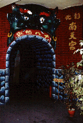
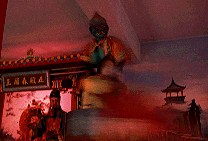
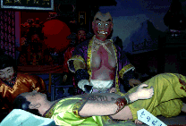
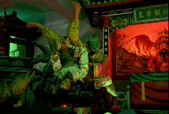
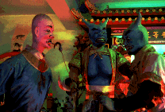
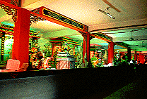
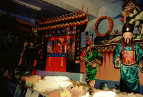
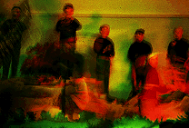
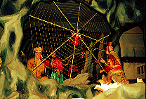
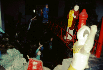

八卦山南天宮/彰化
八卦山の大仏さんの門前には世界捜奇博物館なるものがあり、そーゆーのって台湾の人達は結構好きだから凄い人出だったんだけど、その裏にひっそりと佇む看板に気が付く人はあまりいないようだ。
看板の文句は「十八地獄 南天宮」のみ。シンプルだが素通りは許されないキャッチフレーズである（私にとっては）。
で、5分後、私は南天宮2階の十八地獄入口に立っていた。鬼の口がひろがる書き割りの入り口を見た瞬間、イヤ〜な予感がした「これ、ただのお化け屋敷か？」。しかし入口を抜けると想像を絶する光景が待っていたのである。

その部屋に入った瞬間は薄暗く先が良く見えなかったのだが、カチッとセンサーのスイッチが入る音と同時に明かりが付きその部屋の全容が見て取れた。

そこには数十メートルにわたる色とりどりの鑞人形パノラマ十八地獄が繰り広げられているではないか。しかもそれらは電動人形で、地獄で起こるあんな事やこんな事を延々と続けている。
これは相当エグイ。しかし決してスプラッター的な意味ではなく、様々な照明と派手な中国風の光景には思わずうっとりしてしまった。美しい。人形がユーモラスなのもその一因かも知れない。

因みに4階には「魔界怪譚」というコーナーがあるのだがこっちは完全にお化け屋敷。2階の幻想的な光景を期待しつつポワ〜ンとしていくと結構ビビるかも。ただし最後の方の百鬼夜行的な行列シーンは堪らなく美しい。装飾過剰でキッチュな台湾の寺の魅力を見事に表現し切っている寺である。

そいうえば、話は前後するが八卦山大仏の裏の大雄宝殿の地下にも鑞人形館があるというのを帰国後に知った。うむ〜、惜しい。
台湾大仏列伝のページへ
珍寺大道場 HOME